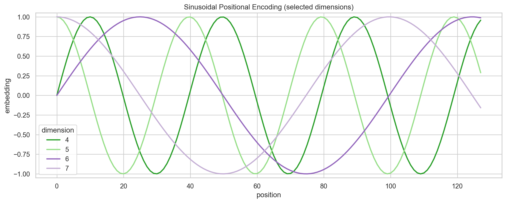
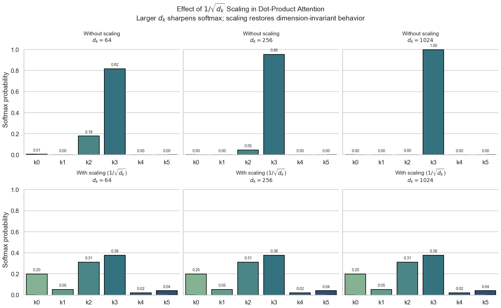
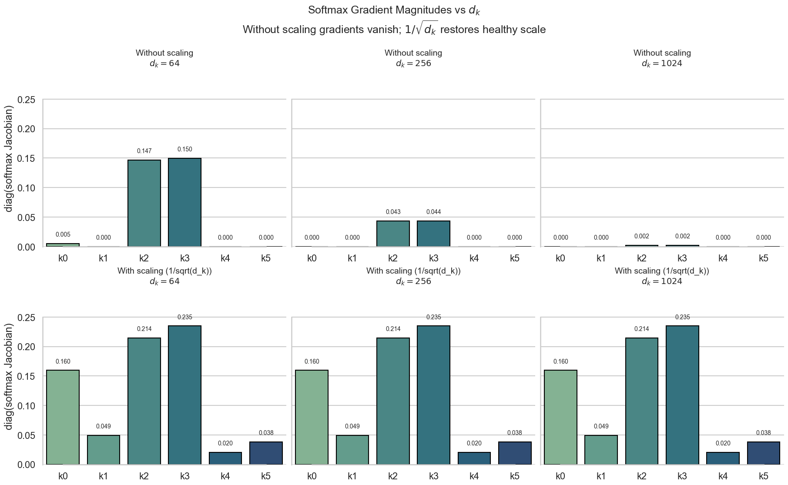

我们开始第一篇论文的学习： 《Attention is All You Need》 (Vaswani et al., 2023)，也就是传说中的Transformer模型。Transformer模型的提出，彻底改变了自然语言处理（NLP）以及更广泛的领域。该架构完全基于注意力机制(Attention)，不再依赖循环（RNN）或卷积（CNN），因此在训练时更易并行化、效率更高。Transformer 已成为众多前沿模型的基础，不仅在 NLP 中表现突出，也扩展到计算机视觉等领域。比如 ChatGPT、DeepSeek 等大语言模型（LLM）都以 Transformer 为核心架构。所以我们自然就把它当作我们第一篇文章的首选。
Preliminary
在开始学习Transformer之前，我们预习一下一些需要的知识，以便我们可以更好的理解这个模型。
Softmax Function
Softmax Function 是一个 将实数向量转换为概率分布 的函数，定义如下：
其中， 是输入向量的第 个元素， 是自然对数的底数。Softmax 函数的输出是一个概率分布，所有输出值的和为 1。
def softmax(z):
exp_z = torch.exp(z)
return exp_z / torch.sum(exp_z)为什么在Transformer中要选择Dot Similarity 而不是 Cosine Similarity？
Transformer 选择 dot similarity 而不是 cosine similarity，是因为它既能衡量方向匹配，又能利用向量模长表达强弱，而且能直接高效实现为 的矩阵乘法；而 cosine similarity 需要先归一化向量，增加了计算复杂度，并且丢失了模长信息，这对于捕捉不同词汇的重要性和关系可能不够理想。
Vector Similarity
在Transformer中，计算向量之间的相似性是一个重要的步骤，常用的方法有点积（Dot Product）和余弦相似度（Cosine Similarity）。在Transformer中，主要使用Dot Product来衡量向量之间的相似性，接下来我们来简单回顾一下Dot Product的计算方法：
其中， 和 是两个向量， 是向量的维度， 和 分别是向量 和 在第 个维度的分量：
- Dot Product 的值越大，表示两个向量越相似。
- Dot Product 的值越小，表示两个向量越不相似。
Dot Product也可以看作是 Unnormalized Cosine Similarity，因为它没有对向量进行归一化处理。
我们也可以使用矩阵乘法来计算多个向量之间的相似性：
其中， 是一个 的矩阵， 是一个 的矩阵， 是 的转置矩阵，结果是一个 的矩阵，表示 中的每个向量与 中的每个向量之间的点积。
def dot_product_matrix(A, B):
return torch.matmul(A, B.T)Transformer
简单回顾了一下这些数学知识，接下来，让我们来看看Transformer到底是个什么东西。

Transformer(Vaswani et al., 2023) 是 Google 在2017年提出的新的神经网络架构，它的提出主要是为了解决，
- Sequence Modeling的效率问题:
- 在 Transformer 出现之前，主流方法是 RNN和 CNN。
- RNN 需要按顺序逐步处理序列，无法并行化，训练和推理效率低下。
- CNN 虽然有一定的并行性，但捕捉长距离依赖需要堆叠很多层，计算开销大。
- 在 Transformer 出现之前，主流方法是 RNN和 CNN。
- Long Distance Dependency Modeling:
- RNN 在捕捉长距离依赖时容易出现Gradient Vanish 或Gradient Explosion，导致模型难以学习远距离的信息。
Gradient Vanish & Gradient Explosion
- Gradient Vanish 问题是指在深度神经网络中，随着梯度在反向传播过程中逐层传递，梯度值逐渐变小，最终趋近于零的现象。这会导致前面的层几乎没有梯度更新，从而无法有效学习。
- Gradient Explosion 则是指在深度神经网络中，随着梯度在反向传播过程中逐层传递，梯度值逐渐变大，最终变得非常大，导致模型参数更新过大，训练过程不稳定，甚至发散。
This inherently sequential nature precludes parallelization within training examples, which becomes critical at longer sequence lengths, as memory constraints limit batching across examples. … In these models, the number of operations required to relate signals from two arbitrary input or output positions grows in the distance between positions, linearly for ConvS2S and logarithmically for ByteNet. This makes it more difficult to learn dependencies between distant positions
Attention is all you need, p.2
Transformer的基本框架如 Fig. 1 所示。整体结构比较简单清晰，主要包括Encoder和Decoder两大部分:
class Transformer(nn.Module):
def __init__(self, config: ModelConfig):
super().__init__()
self.encoder = Encoder(config)
self.decoder = Decoder(config)
self.output_layer = nn.Linear(config.d_model, config.tgt_vocab_size)
...
def forward(self, original, target):
enc_output = self.encoder(original)
dec_output = self.decoder(target, enc_output)
output = self.output_layer(dec_output)
return output接下来让我们从下至上，来深度解刨Transformer的模型结构，主要包括以下几个关键组件:
- Word Embedding Layer: 将词汇转换为向量表示
- Position Embedding Layer: 注入位置信息
- Attention Layer Transformer的核心组件
- Self-Attention Layer: 处理输入序列内部的依赖关系
- Causal Self-Attention Layer: 处理解码器中的Auto-Regressive依赖关系
- Cross-Attention Layer: 处理输入序列和输出序列之间的依赖关系
- Normalization Layer: 标准化输入，稳定训练
- Feed Forward Layer: 非线性变换，增强模型表达能力
- Output Layer: 生成最终的预测结果
Word Embedding Layer
Word Embedding 基本是所有语言模型的第一步，它的作用是 将离散的词汇转换为连续的向量表示。这样，模型就可以在一个高维空间中处理词汇之间的关系和相似性。我们通常使用一个嵌入矩阵（Embedding Matrix）来实现这一点:
其中， 是嵌入矩阵, 是词汇在词表中的索引， 是嵌入维度， 是词汇表大小。 该操作等价于将词汇 的 One-Hot Encoding 与嵌入矩阵相乘，即：
从实现角度看，这一过程可以直接理解为：通过词汇索引 ，从嵌入矩阵 中取出第 行作为该词的向量表示。
更直观的方式就是，我们可以将它看作一个查找表（Lookup Table），通过词汇的索引直接获取对应的嵌入向量。接下来我们来看一下代码实现：
class navie_embedding(nn.Module):
def __init__(self, v, d):
super().__init__()
self.embedding = nn.Parameter(torch.randn(v, d)) # 初始化Embedding Table
def forward(self, x):
# x: (batch_size, seq_len)
# 第一种方法:
# return self.embedding[x] # 直接索引获取嵌入向量
# 第二种方法: One Hot Encoding
# x_one_hot = F.one_hot(x, num_classes=self.embedding.size(0)).float() # (batch_size, seq_len, v)
# return torch.matmul(x_one_hot, self.embedding) # (batch_size, seq_len, d)
# 第三种方法，利用Gather函数
# batch_size, seq_len = x.size()
# x = x.unsqueeze(-1).expand(-1, -1, self.embedding.size(1)) # (batch_size, seq_len, d)
# return torch.gather(self.embedding.unsqueeze(0).expand(batch_size, -1, -1), 1, x) # (batch_size, seq_len, d)在代码中，我们定义了一个简单的嵌入层 navie_embedding，它接受词汇表大小 v 和嵌入维度 d 作为参数。我们初始化了一个嵌入矩阵 self.embedding，并在前向传播中通过索引、One-Hot 编码或 gather 函数来获取对应的嵌入向量。
在实际应用中，我们通常会使用 PyTorch 提供的 nn.Embedding 类来简化这一过程：
class WordEmbedding(nn.Module):
def __init__(self, vocab_size, d_model):
super().__init__()
self.embedding = nn.Embedding(vocab_size, d_model)
def forward(self, x):
return self.embedding(x)在 Transformer 中，词嵌入层不仅用于将输入词汇转换为向量表示，还用于将解码器的输出词汇转换为向量表示。为了保持输入和输出的一致性，Transformer 采用了Weight Tying的策略: 即Output Layer的权重矩阵与Embedding Layer的权重矩阵共享:
并且在初始化时，对嵌入向量进行了缩放处理，即乘以 ，以确保嵌入向量的尺度适合后续的注意力计算
In our model, we share the same weight matrix between the two embedding layers and the pre-softmax linear transformation. In the embedding layers, we multiply those weights by .
Attention is all you need, p.5
Position Embedding Layer
Since our model contains no recurrence and no convolution, in order for the model to make use of the order of the sequence, we must inject some information about the relative or absolute position of the tokens in the sequence. To this end, we add “positional encodings” to the input embeddings at the bottoms of the encoder and decoder stacks.
Attention is all you need, p.6
Transformer模型中没有使用RNN或CNN，因此缺乏对序列中词汇顺序的建模能力。也就是说，Transformer是 Permutation Invariant 的模型，它无法区分输入序列中词汇的顺序。例如，对于输入序列 “I love you” 和 “you love I”，Transformer会得到相同的表示，因为它们包含相同的词汇，且没有位置信息来区分它们。
为了解决这个问题，Transformer引入了位置编码（Position Embedding）来注入位置信息，使模型能够感知词汇在序列中的位置。 其中，位置编码有两种主要的方法: 绝对位置编码和相对位置编码。在原始的Transformer论文中，使用的是绝对位置编码:
其中， 是词汇在序列中的位置， 是嵌入维度的索引， 是嵌入维度的大小。通过这种方式，我们可以为每个位置生成一个唯一的向量表示。
仔细观察上面的公式，我们可以发现:
- 位置编码的维度与词汇嵌入的 维度相同，这样可以 方便地将两者相加。
- 使用正弦和余弦函数可以确保不同位置的编码具有不同的频率，从而捕捉到不同的位置信息。
- 这种方法还具有一个优点，即它可以推广到比训练时更长的序列，因为位置编码是基于位置计算的，而不是依赖于具体的词汇。
为什么是与Word Vector相加，而不是相乘或者 concat 呢？
如果用相乘 , 那么位置编码中为0的维度会直接将词向量的对应维度置为0，导致信息丢失。如果用concat, 那么词向量和位置编码的维度会增加一倍，导致后续的Attention计算复杂度增加，同时也会改变模型的参数规模，影响训练效果。用相加的方式，可以保持词向量的维度不变，同时将位置信息注入到词向量中，使得模型能够同时利用词汇信息和位置信息进行学习。
我们来仔细看一下[Eq. (7)]，假设我们固定位置 ，并且嵌入维度 ，我们可以计算出对应的位置信息：
pos = 1
d_model = 6
pe = torch.zeros(d_model)
for i in range(d_model // 2):
pe[2 * i] = torch.sin(pos / (10000 ** (2 * i / d_model)))
pe[2 * i + 1] = torch.cos(pos / (10000 ** (2 * i / d_model)))
print(pe)计算的方式很简单。接下来，我们来看一下在Transformer中，我们如何实现它。在实际的实现当中，会利用一些数学的技巧来防止Overflow:
class PositionalEncoding(nn.Module):
def __init__(self, d_model, max_len=5000):
super().__init__()
position = torch.arange(0, max_len).unsqueeze(1) # (max_len, 1)
i = torch.arange(0, d_model, 2) # (d_model/2,)
div_term = torch.exp(i * (-math.log(10000.0) / d_model)) # (d_model/2,)
pe = torch.zeros(max_len, d_model)
pe[:, 0::2] = torch.sin(position * div_term)
pe[:, 1::2] = torch.cos(position * div_term)
pe = pe.unsqueeze(0) # (1, max_len, d_model)
self.register_buffer('pe', pe)
def forward(self, x):
x = x + self.pe[:, :x.size(1), :]
return x

从 Fig. 3 中我们可以看到：Sinusoidal PE 是一个「多尺度表示」，不同的维度对应不同的频率，从而捕捉到不同的位置信息：
- 低维 → 高频 → 局部、精细位置信息
- 高维 → 低频 → 全局、长距离位置信息
我们可以把它想象成时钟的指针，低维就像时钟的秒针，转得快，能够捕捉到细微的位置信息；高维就像时钟的时针，转得慢，能够捕捉到更长距离的位置信息。

Why Sinusoidal Position Embedding?
We chose this function because we hypothesized it would allow the model to easily learn to attend by relative positions, since for any fixed offset k, P Epos+k can be represented as a linear function of P Epos. We also experimented with using learned positional embeddings.
Attention is all you need, p.6
第一个好处就是：==相对位置编码==。假设我们有两个位置 和 ，其中 是一个固定的偏移量。那么根据[Eq. (7)]，我们可以表示为:
其中， 。我们可以看到，位置 的编码可以表示为位置 的编码通过一个线性变换得到的结果。这意味着模型可以通过学习这个线性变换来捕捉相对位置关系。 是一个旋转矩阵，表示在二维空间中的旋转变换.
Rotate Matrix
Rotate Matrix 是一种二维空间中的线性变换，用于表示点绕原点旋转一定角度的操作。对于一个角度 ，其旋转矩阵定义如下: 当我们将一个二维向量 乘以旋转矩阵 时，得到的新向量 表示原始向量绕原点旋转了 角度: 之后我们要学习的RoPE (Su et al., 2023)，也是基于这个性质来设计的。
第二个好处是：==可推广性==。由于位置编码是基于位置计算的，而不是依赖于具体的词汇，因此模型可以推广到比训练时更长的序列。这对于处理长文本或长序列任务非常有用。
We chose the sinusoidal version because it may allow the model to extrapolate to sequence lengths longer than the ones encountered during training.
Attention is all you need, p.6
假设我们在训练时，模型见过的最大序列长度是 ，那么在测试时，如果遇到一个更长的序列，长度为 ，我们仍然可以使用相同的公式来计算位置编码:
不过个人认为，可拓展的还有一个原因是：由于 () 的编码可以表示为仅依赖 的线性变换作用在 的编码上，模型更容易学习“相对位移”的规律，从而在更长序列上具备一定外推能力（论文用词为 may allow，表示倾向性而非严格保证）。
Attention Layer
Attention机制是Transformer的核心组件，它允许模型在处理序列时动态地关注输入序列中的不同部分。Attention机制的基本思想是通过计算查询（Query）、键（Key）和值（Value）之间的相似性[Eq. (3)] 来决定如何加权输入信息。具体来说，Attention的计算过程如下:
用代码来表示就是:
def scaled_dot_product_attention(q, k, v):
d_k = q.size(-1)
scores = torch.matmul(q, k.transpose(-2, -1)) / math.sqrt(d_k)
attn = F.softmax(scores, dim=-1)
output = torch.matmul(attn, v)
return output, attn我们来拆看看一下这个公式，由四部分组成:
- : 计算Query和Key之间的点积，得到相似性矩阵，表示每个查询与所有键的相关性。
- : 这是一个缩放因子，用于防止点积值过大，导致Softmax函数的梯度变得非常小，从而影响模型的训练效果。这里， 是键向量的维度。
- : 对相似性矩阵进行归一化，得到每个查询对所有键的注意力权重。
- : 使用注意力权重对值进行加权求和，得到最终的输出表示。
Attention的第一步，就是计算Query和Key之间的点积 (Eq. (3)) ，得到相似性矩阵, 表示每个查询与所有键的相关性。假设我们有一个查询矩阵 和一个键矩阵 ，那么点积矩阵 的计算过程如下:
其中， 是查询矩阵 的第 行， 是键矩阵 的第 行。结果矩阵 的每个元素 表示查询 与键 之间的点积。 的作用就是告诉我们，每个查询向量与所有键向量之间的相似性，用于之后从值向量中提取相关信息。
Dot-product attention is much faster and more space-efficient in practice, since it can be implemented using highly optimized matrix multiplication code. Attention is all you need, p.4
Attention的第二步，是对点积矩阵进行缩放，使用 作为缩放因子。假设 ，那么点积 的期望和方差分别为:
我们可以看到，点积的方差与键向量的维度 成正比。随着 的增加，点积 logits 的尺度会不断放大，使得 softmax 的输入更容易进入饱和区（saturation regime），此时某些位置的概率接近 1，其余接近 0。在该区域内，softmax 的梯度会显著变小，从而导致反向传播不稳定、训练效率下降。通过除以 ，可以将点积 logits 的方差重新归一化到 的尺度，使 softmax 始终工作在梯度较为敏感的区域，从而稳定训练过程。

因此这个有时候我们称之为 “Scale Dot-Product Attention”。通过引入缩放因子 ，我们可以将点积的方差控制在一个合理的范围内，从而稳定Softmax函数的输出，改善模型的训练效果。
:::{.note .foldable .is-open} ::::{.note-header .foldable-header} NOTE Gradient of Softmax :::: ::::{.note-container .foldable-content}
其中， 是 Kronecker Delta，当 时为1，否则为0。
当某一项 时：
- 其他项
所以所有的梯度都接近于0 :::: :::
:::{#fig-scaling-d-k-gradient}

Gradient of Softmax with different scaling factor :::
Attention的第三步，是对缩放后的点积矩阵进行Softmax归一化，得到每个查询对所有键的注意力权重。假设我们有一个缩放后的点积矩阵 。 这部分很直观，我们对矩阵 的每一行应用Softmax函数，得到注意力权重矩阵 :
其中， 表示查询 对键 的注意力权重。通过Softmax归一化，我们确保每个查询的注意力权重之和为1，从而可以将其解释为概率分布。这些注意力权重反映了每个查询与所有键之间的相关性，帮助模型动态地关注输入序列中的不同部分。
Attention的最后一步，是使用注意力权重对值进行加权求和，得到最终的输出表示。假设我们有一个值矩阵 和注意力权重矩阵 ，那么输出矩阵 的计算过程如下:
其中， 是值矩阵 的第 行。结果矩阵 的每一行表示对应查询的加权值向量。通过这种方式，模型能够根据注意力权重动态地聚合输入信息，从而生成更具表达力的输出表示。
:::{.highlight} 拆看来看，Attention也没有想象的这么复杂。它主要是通过计算查询和键之间的相似性，来决定如何加权输入的值，从而生成输出表示。
Attention 就像做菜：
- Query 决定你想做什么，
- Key 决定每个食材的特点，
- 是把所有食材摆在桌上，看看哪些比较Match你的需求，
- 是调整食材的分量，
- Softmax 决定用多少，
- Value 决定最终味道。
它不像 RNN 或者 CNN
- 你不是按“食材顺序”处理（不是 RNN）
- 也不是只看相邻几样（不是 CNN）
- 而是 一次性看完整桌食材，再决定重点 :::
Multi-Head Attention
Multi Head Attention 就是在 Attention 的基础上，并行地计算多个注意力头（Attention Head），从而捕捉输入序列中的不同子空间信息。其中每一个Head，都是独立的 Self-Attention 机制。Multi-Head Attention 的计算过程如下:
{#eq-multi-head-attention-mathematical-formula} 其中，每个注意力头 的计算过程如下:
每个Head独立的运行，然后将所有Head的输出进行拼接（Concat），最后通过一个线性变换 得到最终的输出表示。通过这种方式，Multi-Head Attention 能够同时关注输入序列中的不同部分，从而增强模型的表达能力。
Multi-head attention allows the model to jointly attend to information from different representation subspaces at different positions. With a single attention head, averaging inhibits this. Attention is all you need, p.5
class MultiHeadAttention(nn.Module):
def __init__(self, config: ModelConfig, is_causal: bool):
super().__init__()
self.is_causal = is_causal
self.num_heads = config.num_heads
self.head_dim = config.d_model // config.num_heads
assert self.head_dim * self.num_heads == config.d_model, "d_model must be divisible by num_heads"
self.q_proj = nn.Linear(config.d_model, config.d_model)
self.k_proj = nn.Linear(config.d_model, config.d_model)
self.v_proj = nn.Linear(config.d_model, config.d_model)
def forward(self, q, k, v):
b, q_len, _ = q.size()
kv_len = k.size(1)
# 通过创建view和transpose将q, k, v拆分成多个head
q = self.q_proj(q).view(b, q_len, self.num_heads, self.head_dim).transpose(1, 2)
k = self.k_proj(k).view(b, kv_len, self.num_heads, self.head_dim).transpose(1, 2)
v = self.v_proj(v).view(b, kv_len, self.num_heads, self.head_dim).transpose(1, 2)Self-Attention Layer
Self-Attention, 顾名思义，是指在计算Attention时，查询（Query）、键（Key）和值（Value）都来自同一个序列。这种机制允许模型在处理序列时，动态地关注序列中的不同位置，从而捕捉到序列内部的依赖关系。Self-Attention的计算过程如下:
在没有任何掩码的情况下，Self-Attention允许每个位置的查询向量关注序列中的所有位置，包括当前位置和未来位置的信息。这种机制使得模型能够捕捉到长距离的依赖关系，从而增强了模型的表达能力。
out = self.attention(x, x, x) # Self-AttentionCausal Self-Attention Layer
其中， 是一个掩码矩阵（Mask Matrix），用于阻止模型在生成序列时访问未来的信息。具体来说，掩码矩阵 的定义如下:
{#eq-causal-mask-mathematical-formula} 这个掩码矩阵确保了在计算注意力权重时，查询位置 只能关注到键位置 的信息，从而实现了自回归（Auto-Regressive）的特性，防止信息泄露。
def create_causal_mask(q_len: int, k_len: int) -> torch.Tensor:
return torch.tril(torch.ones((q_len, k_len), dtype=torch.bool))We need to prevent leftward information flow in the decoder to preserve the auto-regressive property. We implement this inside of scaled dot-product attention by masking out (setting to ) all values in the input of the softmax which correspond to illegal connections. Attention is all you need, p.5


在 Fig. 6 中，我们可以看到掩码矩阵 的结构。上三角部分被设置为 ，表示这些位置的注意力权重在经过 Softmax 归一化后将变为 0，从而阻止模型关注未来的信息。在 Fig. 7 中， 是填充位置（Padding Positions），这些位置同样被掩码掉，确保模型不会关注到这些无效的信息。 :::
:::{.note .foldable .is-open} ::::{.note-header .foldable-header} NOTE: Padding Mask :::: ::::{.note-container .foldable-content} 除了Causal Mask之外, 在实际应用中, 我们还需要处理变长序列中的填充位置(Padding Positions)。这些位置通常用特殊的填充值(如0)表示, 不包含有效信息。在计算Attention时, 我们需要确保模型不会关注到这些填充位置, 因此我们引入了Padding Mask。 在计算Attention中，我们可以将Padding Mask与Causal Mask结合使用, 形成一个综合的掩码矩阵 Fig. 7 。具体来说, 对于填充位置, 我们同样将对应的注意力权重设置为 ，确保这些位置在经过Softmax归一化后不会被关注到。
class MultiHeadAttention(nn.Module):
...
def construct_mask(self, pad_mask, q_len: int, k_len: int, device):
# True=allowed, False=masked
mask = None
# causal mask (decoder self-attention only)
if self.is_causal:
causal_mask = create_causal_mask(q_len, k_len)
causal_mask = causal_mask.to(device)
mask = causal_mask[None, None, :, :]
if pad_mask is not None:
# True means allowed
pad_mask = pad_mask[:, None, None, :].to(device) # Shape: (batch, 1, 1, kv_len)
mask = pad_mask if mask is None else (mask & pad_mask)
return mask
def forward(self, q, k, v, pad_mask=None):
...
mask = self.construct_mask(pad_mask, q_len, kv_len, q.device)
out, attn = scaled_dot_product_attention(q, k, v, mask)
...:::: :::
用代码来表示Causal Self-Attention， 我们只需要做原来的基础上，在计算Softmax之前，添加掩码矩阵 即可:
def scaled_dot_product_attention(
q,
k,
v,
mask=None #<<
):
d_k = q.size(-1)
scores = torch.matmul(q, k.transpose(-2, -1)) / math.sqrt(d_k)
if mask is not None: #<<
scores = scores.masked_fill(mask == 0, float("-inf")) #<<
attn = F.softmax(scores, dim=-1)
output = torch.matmul(attn, v)
return output, attn其中mask参数是 Padding Mask 与 Causal Mask 的结合。
Cross Attention Layer
Cross-Attention 是指在计算 Attention 时，查询（Query）来自解码器的输入序列，而键（Key）和值（Value）来自编码器的输出序列。这种机制允许解码器在生成输出序列时，动态地关注输入序列中的不同部分，从而捕捉到输入和输出之间的依赖关系。Cross-Attention 的计算过程如下:
out = self.attention(decoder_x, encoder_x, encoder_x) # Cross-AttTime Complexity of Attention
接下来，我们来分析一下 Self-Attention 的时间复杂度。假设输入序列的长度为 ，嵌入维度为 ，那么 Self-Attention 的时间复杂度主要包括以下几个部分:
- 计算点积矩阵 的时间复杂度为 ，因为我们需要对每个查询向量与所有键向量进行点积计算，共有 个查询和 个键，每个点积计算的时间复杂度为 。
- 计算 Softmax 的时间复杂度为 ，因为我们需要对每个查询向量的点积结果进行归一化，共有 个查询，每个查询需要对 个键进行归一化。
- 计算加权和 的时间复杂度为 ，因为我们需要对每个查询向量与所有值向量进行加权求和， 共有 个查询和 个值，每个加权求和的时间复杂度为 。
综上所述，Self-Attention 的总时间复杂度为 。随着输入序列长度 的增加，时间复杂度呈二次增长，这可能会导致在处理长序列时计算开销较大。因此，在实际应用中，研究人员提出了各种优化方法，如稀疏注意力（Sparse Attention）、局部注意力（Local Attention）等，以降低 Self-Attention 的时间复杂度，提高模型的效率。
:::{.warning .foldable .is-open} ::::{.warning-header .foldable-header} Warning: 理解Attention Complexity的重要性 :::: ::::{.warning-container .foldable-content} 理解Attention的Complexity很重要, 因为它直接影响到Transformer模型的效率和可扩展性。也就是说, 当处理长序列时, Attention的计算复杂度会显著增加, 这可能导致训练和推理的时间成本变得非常高。因此, 研究人员提出了各种优化方法, 如稀疏注意力（Sparse Attention）、局部注意力（Local Attention），Linear Attention，Flash Attention，包括Deep Sparse Attention等，都是为了降低Attention的计算复杂度，从而提升Transformer在处理长序列时的效率和性能。可以说，理解了Attention的Complexity, 就理解了Transformer的效率瓶颈所在。 :::: :::
::: {#fig-time-complexity-of-self-attention}

Discussion on Time Complexity and Maximum Sequence Length of Self-Attention :::
::: {.columns} ::: {.column}

RNN的时间复杂度是，Transformer的时间复杂度是 ，那RNN不是更快吗？
不一定! Transformer 往往更快的关键不在于把总复杂度变成 ，而在于把“序列维度上的计算”从必须串行，变成可并行的矩阵运算也就是[@fig-time-complexity-of-self-attention]里的 Sequential Operations 对比）。因此在 GPU/TPU 上，Transformer 的吞吐通常更高。
- 并行计算 / 并行深度（critical path）：RNN 存在严格的时间步依赖，必须按步计算，导致并行深度随序列长度线性增长（）；而 Self-Attention 在一个层内可以用几次矩阵乘法同时处理所有位置，因此并行深度是常数级。
- 瓶颈不同（ vs ）：RNN 对隐藏维 的主要成本是二次（），而 attention 对 近似一次、但对序列长度 是二次（）。所以当序列非常长时，attention 的 会成为瓶颈，实践中常用
- FlashAttention(Dao et al., 2022) (优化常数与显存/IO)
- Window / restricted attention（将全局注意力改为局部窗口，类似图[@fig-time-complexity-of-self-attention] 中的“restricted self-attention”那一行）来进一步提升长序列效率。
::: :::
一句话总结Attention就是:
Normalization Layer
Layer Normalization (Ba et al., 2016) 是一种用于深度神经网络的归一化技术，旨在提高训练的稳定性和速度。与批量归一化（Batch Normalization）不同，Layer Normalization 是在每个样本的特征维度上 () 进行归一化，而不是在批量维度上进行归一化。这使得 Layer Normalization 特别适用于循环神经网络（RNN）和 Transformer 等模型。
:::{.question .foldable } ::::{.question-header .foldable-header} Question：为什么Layer Normalization更适合Sequence Modeling？ :::: ::::{.question-container .foldable-content}
- 序列长度变化: 在处理变长序列时，批量归一化可能会受到不同长度序列的影响，而 Layer Normalization 可以独立于序列长度进行归一化。
- 时间步依赖: 在 RNN 中，时间步之间存在依赖关系，批量归一化可能会破坏这种依赖关系，而 Layer Normalization 保持了时间步之间的独立性。
- 小批量大小: 在某些任务中，批量大小可能非常小，甚至为1，这使得批量归一化效果不佳，而 Layer Normalization 不依赖于批量大小。 :::: :::
Layer Normalization 的计算过程如下:
其中， 是输入向量的第 个元素， 是向量的维度， 和 分别是均值和方差， 是一个小常数，用于防止除零错误， 和 是可学习的参数，用于缩放和平移归一化后的输出。
class LayerNorm(nn.Module):
def __init__(self, dim: int, eps: float = 1e-6):
super().__init__()
self.eps = eps
self.gamma = nn.Parameter(torch.ones(dim))
self.beta = nn.Parameter(torch.zeros(dim))
def forward(self, x: torch.Tensor) -> torch.Tensor:
mean = x.mean(-1, keepdim=True)
var = x.var(-1, keepdim=True, unbiased=False)
x_hat = (x - mean) / torch.sqrt(var + self.eps)
return self.gamma * x_hat + self.beta:::{.question .foldable} ::::{.question-header .foldable-header} Question: 为什么 和 是必要的? 并且要初始化为1和0? :::: ::::{.question-container .foldable-content} 为什么是必要的？
在Normalization之后 是归一化的输出, 其均值为0，方差为1。这很稳定，但也有一个副作用：模型失去了“想要多大尺度/什么均值”的自由度。如果没有 和 ，模型将失去对原始数据分布的表达能力。通过引入 和 ，模型可以学习到适合当前任务的缩放和平移，从而恢复或调整数据的分布。
为什么初始化为1和0？
初始化成 时，，即初始时 Layer Normalization 的输出与归一化后的输入相同。这种初始化方式确保了在训练开始时，Layer Normalization 不会对数据进行任何缩放或平移，从而避免了对模型训练的干扰。随着训练的进行，模型可以根据需要调整 和 的值，以适应具体任务的需求。 :::: :::
Feed Forward Layer
在Transformer中，前馈神经网络（Feed Forward Network, FFN）是每个编码器和解码器层中的一个重要组成部分。它的主要作用是对每个位置的表示进行非线性变换，从而增强模型的表达能力。前馈神经网络通常由两个线性变换和一个非线性激活函数组成，具体计算过程如下:
其中， 是输入向量， 和 是权重矩阵， 和 是偏置向量， 是前馈网络的隐藏层维度，通常大于 ，在原始的Transformer论文中， 通常设置为 。
为什么要使用前馈神经网络？主要有以下几个原因:
- 非线性变换: 前馈神经网络引入了非线性激活函数（如ReLU），使模型能够学习复杂的非线性关系，从而增强了模型的表达能力。
- 位置独立性: 前馈神经网络对每个位置的表示进行独立的变换，这有助于模型捕捉每个位置的特征，而不受其他位置的影响。
- 增加模型容量: 通过增加前馈神经网络的隐藏层维度 ，可以显著增加模型的容量，从而提升模型的性能。
class FFN(nn.Module):
def __init__(self, config):
super().__init__()
self.fc1 = nn.Linear(config.d_model, config.d_ff)
self.fc2 = nn.Linear(config.d_ff, config.d_model)
def forward(self, x):
return self.fc2(F.relu(self.fc1(x)))Residual Connection
当然，如果要训练一个DEEP Transformer模型，避不开的就是Residual Connection (He et al., 2015), 它的作用是缓解深层网络中的梯度消失问题，从而使得更深层的网络能够被有效训练。其基本思想是通过引入跳跃连接（Skip Connection），将输入直接添加到输出上，从而形成一个“捷径”，使得梯度可以直接传递到更早的层。具体来说，假设我们有一个子层（Sublayer），其输入为 ，输出为 ，那么引入残差连接后的输出 可以表示为:
Backpropagation through Residual Connection
接下来，我们来简单分析一下，残差连接是如何帮助缓解梯度消失问题的。假设我们有一个损失函数 ，
我们想要计算损失函数对输入 的梯度 。根据链式法则，我们可以得到:
其中， 是残差连接的输出， 是单位矩阵。可以看到，梯度 包含了两部分:
- Straight Path: 这部分梯度直接来自于损失函数对输出 的梯度 ，它不经过任何子层的变换，因此不会受到梯度消失的影响。
- Through the Sub-layer: 这部分梯度通过子层的变换传播，可能会受到梯度消失的影响。
通过引入残差连接，模型可以确保梯度在反向传播过程中至少有一部分（Straight Path）能够直接传递到更早的层，从而缓解了梯度消失的问题。这使得深层网络能够被有效训练，从而提升了模型的性能。
Output Layer
在Transformer的输出层，通常会使用一个线性层（Linear Layer）将解码器的输出转换为词汇表大小的向量，然后通过Softmax函数[Eq. (15)] 将其转换为概率分布，从而生成最终的预测结果。具体来说，假设解码器的输出为 ，词汇表大小为 ，那么输出层的计算过程如下:
其中， 是线性层的权重矩阵， 是偏置向量， 是最终的预测结果，表示每个词汇的概率分布。
class Transformer(nn.Module):
def __init__(self, config: ModelConfig):
super().__init__()
...
self.output_layer = nn.Linear(config.d_model, config.tgt_vocab_size)
def forward(self, original, target):
...
logits = self.output_layer(y_dec)
return logitsEncoder & Decoder Layer
有了这些基础组件，我们就可以和叠积木一样，来搭建Transformer的Encoder和Decoder层了。
Encoder 可以表示为:
其中， 是输入向量， 是第 个编码器层的多头自注意力机制， 是第 个编码器层的前馈神经网络， 是第 个编码器层的层归一化。
class EncoderBlock(nn.Module):
def __init__(self, config: ModelConfig):
super().__init__()
self.attn = MultiHeadAttention(config, is_causal=False)
self.ln1 = LayerNorm(config.d_model)
self.ffn = FFN(config)
self.ln2 = LayerNorm(config.d_model)
self.dropout = nn.Dropout(config.dropout)
def forward(self, x: torch.Tensor, pad_mask=None) -> torch.Tensor:
attn_output, _ = self.attn(x, x, x, pad_mask=pad_mask)
x = self.ln1(x + self.dropout(attn_output))
ffn_output = self.ffn(x)
x = self.ln2(x + ffn_output)
return x
class Encoder(nn.Module):
def __init__(self, config: ModelConfig):
super().__init__()
self.layers = nn.ModuleList([EncoderBlock(config) for _ in range(config.num_layers)])
def forward(self, x: torch.Tensor, pad_mask=None) -> torch.Tensor:
for layer in self.layers:
x = layer(x, pad_mask=pad_mask)
return x下图展示了Encoder Layer的过程：
::: {#fig-encoder-layer}
Encoding Layer Process :::
Decoder 可以表示为:
其中， 是解码器的输入向量， 是编码器的输出向量， 是第 个解码器层的因果多头自注意力机制， 是第 个解码器层的交叉注意力机制， 是第 个解码器层的前馈神经网络， 是第 个解码器层的层归一化。
class DecoderBlock(nn.Module):
def __init__(self, config: ModelConfig):
super().__init__()
self.self_attn = MultiHeadAttention(config, is_causal=True)
self.ln1 = LayerNorm(config.d_model)
self.cross_attn = MultiHeadAttention(config, is_causal=False)
self.ln2 = LayerNorm(config.d_model)
self.ffn = FFN(config)
self.ln3 = LayerNorm(config.d_model)
def forward(
self,
x: torch.Tensor,
enc_output: torch.Tensor,
src_pad_mask=None,
tgt_pad_mask=None,
) -> torch.Tensor:
self_attn_output, _ = self.self_attn(x, x, x, pad_mask=tgt_pad_mask)
x = self.ln1(x + self_attn_output)
cross_attn_output, _ = self.cross_attn(x, enc_output, enc_output, pad_mask=src_pad_mask)
x = self.ln2(x + cross_attn_output)
ffn_output = self.ffn(x)
x = self.ln3(x + ffn_output)
return x
class Decoder(nn.Module):
def __init__(self, config: ModelConfig):
super().__init__()
self.layers = nn.ModuleList([DecoderBlock(config) for _ in range(config.num_layers)])
def forward(
self,
x: torch.Tensor,
enc_output: torch.Tensor,
src_pad_mask=None,
tgt_pad_mask=None,
) -> torch.Tensor:
for layer in self.layers:
x = layer(
x,
enc_output,
src_pad_mask=src_pad_mask,
tgt_pad_mask=tgt_pad_mask,
)
return x下图展示了Decoder Layer的过程：
::: {#fig-decoder-layer}
Decoding Layer Process :::
通过堆叠多个编码器层和解码器层，我们就可以构建出完整的Transformer模型。
class Transformer(nn.Module):
def __init__(self, config: ModelConfig):
super().__init__()
self.vocab_embedding = WordEmbedding(config.vocab_size, config.d_model)
self.positional_embedding = PositionalEmbedding(config)
self.encoder = Encoder(config)
self.decoder = Decoder(config)
self.output_proj = nn.Linear(config.d_model, config.vocab_size, bias=False)
self.apply(self._init_weights)
self._tie_weights()
def _tie_weights(self):
self.output_proj.weight = self.vocab_embedding.embedding.weight
def _init_weights(self, module):
if isinstance(module, nn.Linear):
nn.init.xavier_uniform_(module.weight)
if module.bias is not None:
nn.init.zeros_(module.bias)
elif isinstance(module, nn.Embedding):
nn.init.xavier_uniform_(module.weight)
elif isinstance(module, LayerNorm):
nn.init.ones_(module.gamma)
nn.init.zeros_(module.beta)
def forward(
self,
src_input: torch.Tensor,
tgt_input: torch.Tensor,
src_pad_mask=None,
tgt_pad_mask=None,
) -> torch.Tensor:
# Get Src and Tgt embeddings
src_embeddings = self.vocab_embedding(src_input) * math.sqrt(
self.vocab_embedding.embedding.embedding_dim
) + self.positional_embedding(src_input)
tgt_embeddings = self.vocab_embedding(tgt_input) * math.sqrt(
self.vocab_embedding.embedding.embedding_dim
) + self.positional_embedding(tgt_input)
# Feed through Encoder
enc_output = self.encoder(src_embeddings, pad_mask=src_pad_mask)
# Feed through Decoder with Encoder output
dec_output = self.decoder(
tgt_embeddings,
enc_output,
src_pad_mask=src_pad_mask,
tgt_pad_mask=tgt_pad_mask,
)
logits = self.output_proj(dec_output)
return logitsOthers
当然，除了以上的一个部分，Transformer中还有几个值得一提的部分,比如:
- Dropout Layer: 用于防止过拟合
- Label Smoothing: 用于提高模型的泛化能力
Dropout Layer
Dropout 是一种常用的正则化技术，旨在防止神经网络在训练过程中过拟合。其基本思想是在训练过程中，随机地“丢弃”一部分神经元，即将它们的输出设置为零，从而减少神经元之间的相互依赖，提高模型的泛化能力。具体来说，假设我们有一个神经网络层的输入向量 ，Dropout 的计算过程如下:
其中， 是一个与输入向量 形状相同的二进制掩码向量，其每个元素独立地服从伯努利分布，取值为1的概率为 （保留概率），取值为0的概率为 （丢弃概率）。 表示逐元素乘法操作， 是经过 Dropout 处理后的输入向量， 是最终的输出向量，通过除以保留概率 来进行缩放，以保持输出的期望值不变。
用Python实现Dropout如下:
class Dropout(nn.Module):
def __init__(self, p=0.5):
super().__init__()
self.p = p
def forward(self, x):
if self.training:
mask = (torch.rand_like(x) < self.p).float()
return (x * mask) / self.p
else:
return xLabel Smoothing
Label Smoothing 是一种用于分类任务的正则化技术，旨在提高模型的泛化能力。其基本思想是将目标标签从“硬标签”（one-hot encoding）转换为“软标签”，即在目标标签中引入一定的平滑度，从而防止模型过于自信地预测某个类别。具体来说，假设我们有一个分类任务，类别总数为 ，原始的目标标签为 ，其中只有一个元素为1，其余元素为0（one-hot encoding）。Label Smoothing 的计算过程如下:
其中， 是平滑参数，控制标签的平滑程度， 是经过 Label Smoothing 处理后的目标标签。
Experiment
接下来，我们来看一下Transformer模型在训练时的一些细节设置。
Dataset
首先，我们来看一下我们的数据集，在这里，我们使用的Ted Talks的数据集中的英文-中文Pairs，它包含了大量的TED演讲视频的字幕文本，涵盖了多个领域和主题。我们看一下其中几个例子：
[{'en': "Thank you so much, Chris. And it's truly a great honor to have the opportunity to come to this stage twice; I'm extremely grateful.",
'zh': '非常谢谢，克里斯。的确非常荣幸 能有第二次站在这个台上的机会，我真是非常感激。'},
{'en': 'I have been blown away by this conference, and I want to thank all of you for the many nice comments about what I had to say the other night.',
'zh': '这个会议真是让我感到惊叹不已，我还要谢谢你们留下的 关于我上次演讲的精彩评论'},
{'en': 'And I say that sincerely, partly because I need that. Put yourselves in my position.',
'zh': '我是非常真诚的，部分原因是因为----我的确非常需要！ 你设身处地为我想想！'},
{'en': 'I flew on Air Force Two for eight years.', 'zh': '我坐了8年的空军二号。'},
{'en': 'Now I have to take off my shoes or boots to get on an airplane!',
'zh': '不过现在上飞机前我则要脱掉我的鞋子'}]其中 train_dataset 有231,266条数据，test_dataset 有 8,549 条数据。
Tokenizer & Vocabulary
在论文中，Target 和 Source 使用同一个Tokenizer，并且共享同一个词表（Vocabulary）。并且使用 BPE (Byte Pair Encoding) (Sennrich et al., 2016) 来进行分词和构建词表。
在这里，我们用Hugging Face的transformers库中的Tokenizer来进行分词和构建词表，词表大小设置为10,000。
def load_or_train_joint_bpe_tokenizer(
vocab_size: int,
save_prefix: str,
save_name: str = "bpe_joint.json",
src_corpus_file: str = "train_src.txt",
tgt_corpus_file: str = "train_tgt.txt",
):
save_path = f"{save_prefix}_{save_name}"
if os.path.exists(save_path):
print(f"Loading tokenizer from {save_path}")
return Tokenizer.from_file(save_path)
# Train ONE tokenizer on BOTH corpora (concatenated dataset)
tokenizer = Tokenizer(models.BPE(unk_token="<unk>"))
tokenizer.normalizer = NFKC()
tokenizer.pre_tokenizer = ByteLevel(add_prefix_space=True)
tokenizer.decoder = ByteLevelDecoder()
trainer = trainers.BpeTrainer(
vocab_size=vocab_size,
special_tokens=["<pad>", "<unk>", "<s>", "</s>"],
)
tokenizer.train([src_corpus_file, tgt_corpus_file], trainer)
tokenizer.save(save_path)
print(f"Saved tokenizer to {save_path}")
return tokenizer在训练完成后，我们提前处理好数据集，保存为PT格式，方便后续的训练使用。
def encode_file_to_pt(
tokenizer,
in_path: str,
out_path: str,
add_special_tokens: bool = True,
bos_token: str = "<s>",
eos_token: str = "</s>",
max_lines: int | None = None,
):
if os.path.exists(out_path):
print(f"{out_path} already exists")
return
bos_id = tokenizer.token_to_id(bos_token)
eos_id = tokenizer.token_to_id(eos_token)
all_ids = []
with open(in_path, "r", encoding="utf-8") as f:
for i, line in enumerate(f):
if max_lines is not None and i >= max_lines:
break
text = line.rstrip("\n")
enc = tokenizer.encode(text)
ids = enc.ids
if add_special_tokens:
ids = [bos_id] + ids + [eos_id]
all_ids.append(torch.tensor(ids, dtype=torch.int32))
os.makedirs(os.path.dirname(out_path) or ".", exist_ok=True)
torch.save(all_ids, out_path)
print(f"Saved {len(all_ids)} sequences to {out_path}")
encode_file_to_pt(tokenizer, "train_src.txt", "train_src_ids.pt")
encode_file_to_pt(tokenizer, "train_tgt.txt", "train_tgt_ids.pt")
encode_file_to_pt(tokenizer, "test_src.txt", "test_src_ids.pt")
encode_file_to_pt(tokenizer, "test_tgt.txt", "test_tgt_ids.pt")Padding Samples
至此，我们的数据集就准备好了。在后续的训练中，我们可以直接加载这些预处理好的数据集进行训练，需要注意的一点是，我们在加载数据集时，需要对输入序列进行Padding，以确保每个Batch中的序列长度一致。在论文中有一个方式，就是将长度差不多的序列放在同一个Batch中，这样可以减少Padding的数量，从而提高训练效率。在这里，我们使用一个 Sampler 来实现这个功能。
class BucketBatchSampler(Sampler[list[int]]):
"""
Yields batches of indices where sequences have similar lengths.
length_fn: function(idx) -> int
"""
def __init__(
self,
lengths,
batch_size: int,
bucket_size: int = 2048,
shuffle: bool = True,
drop_last: bool = False,
seed: int = 0,
):
self.lengths = list(lengths)
self.batch_size = batch_size
self.bucket_size = bucket_size
self.shuffle = shuffle
self.drop_last = drop_last
self.seed = seed
def __iter__(self):
rng = random.Random(self.seed)
indices = list(range(len(self.lengths)))
if self.shuffle:
rng.shuffle(indices)
# chunk into buckets
for b_start in range(0, len(indices), self.bucket_size):
bucket = indices[b_start : b_start + self.bucket_size]
# sort inside bucket by length
bucket.sort(key=lambda i: self.lengths[i])
# make batches
batches = [bucket[i : i + self.batch_size] for i in range(0, len(bucket), self.batch_size)]
if self.drop_last and len(batches) > 0 and len(batches[-1]) < self.batch_size:
batches = batches[:-1]
if self.shuffle:
rng.shuffle(batches)
for batch in batches:
yield batch
# update seed so next epoch reshuffles differently
self.seed += 1
def __len__(self):
n = len(self.lengths)
if self.drop_last:
return n // self.batch_size
return math.ceil(n / self.batch_size)这个 BucketBatchSampler 会根据序列的长度将它们分配到不同的Bucket中，然后在每个Bucket内按长度排序，最后生成Batch。这样可以确保每个Batch中的序列长度相似，从而减少Padding的数量。
有了一个Batch之后，我们还需要一个 collate_fn 来对Batch中的序列进行Padding:
def translation_collate(batch, pad_id: int, sos_id: int, eos_id: int, max_len: int | None = None):
src_list = [item["src_ids"] for item in batch]
tgt_list = [item["tgt_ids"] for item in batch]
if max_len is not None:
src_list = [x[:max_len] for x in src_list]
tgt_list = [x[:max_len] for x in tgt_list] # leave room for EOS
decoder_list = [t[:-1] for t in tgt_list]
labels_list = [t[1:] for t in tgt_list]
src_max = max(x.numel() for x in src_list)
dec_max = max(x.numel() for x in decoder_list)
def pad_1d(x: torch.Tensor, L: int):
x = x.to(torch.long)
if x.numel() == L:
return x
return torch.cat([x, x.new_full((L - x.numel(),), pad_id, dtype=torch.long)])
encoder_input_ids = torch.stack([pad_1d(x, src_max) for x in src_list], dim=0)
decoder_input_ids = torch.stack([pad_1d(x, dec_max) for x in decoder_list], dim=0)
labels = torch.stack([pad_1d(x, dec_max) for x in labels_list], dim=0)
return {
"encoder_input_ids": encoder_input_ids,
"decoder_input_ids": decoder_input_ids,
"labels": labels,
"encoder_mask": create_padding_mask(encoder_input_ids, pad_id),
"decoder_mask": create_padding_mask(decoder_input_ids, pad_id),
}在这个 collate_fn 中，我们还同时构造了Labels， Labels是Decoder输入序列右移一位得到的[t[1:] for t in tgt_list]，这样可以确保模型在训练时，能够正确地预测下一个词。
至此，我们的数据预处理和Batch准备工作就完成了，接下来我们来看一下模型的训练细节。
Weight Initialization
在论文中，没有提到如何Initialize的，在这里，我用Xavier initialization, 来初始化Transformer模型的权重参数。Xavier初始化旨在保持每层神经网络的输入和输出的方差相等，从而避免梯度消失或爆炸的问题。具体来说，假设我们有一个神经网络层，其输入维度为 ，输出维度为 ，那么Xavier初始化的权重矩阵 的每个元素可以从以下均匀分布中采样:
def _init_weights(self, module):
if isinstance(module, nn.Linear):
nn.init.xavier_uniform_(module.weight)
if module.bias is not None:
nn.init.zeros_(module.bias)
elif isinstance(module, nn.Embedding):
nn.init.xavier_uniform_(module.weight)具体的原因为什么Xavier initialization有效，在这里就不多赘述了，之后可能会有专门的文章来介绍这个内容。
Optimizer
Transformer的论文中，用的是Adam Optimizer (Kingma & Ba, 2017), 它是一种自适应学习率优化算法，结合了动量法和RMSProp的优点。Adam通过计算梯度的一阶矩估计（动量）和二阶矩估计（梯度的平方的指数加权平均）来调整每个参数的学习率，从而提高训练的稳定性和收敛速度。Adam的更新规则如下:
用Python实现Adam Optimizer如下:
class Adam:
def __init__(self, params, lr, betas=(0.9, 0.98), weight_decay=0.01, eps=1e-9):
self.params = list(params)
self.lr = lr
self.betas = betas
self.weight_decay = weight_decay
self.eps = eps
self.state = {}
for p in self.params:
self.state[p] = {
"step": 0,
"m": torch.zeros_like(p.data),
"v": torch.zeros_like(p.data),
}
def update_lr(self, new_lr):
self.lr = new_lr
def step(self):
for p in self.params:
if p.grad is None:
continue
grad = p.grad.data
state = self.state[p]
state["step"] += 1
beta1, beta2 = self.betas
# Update biased first moment estimate
state["m"] = beta1 * state["m"] + (1 - beta1) * grad
# Update biased second raw moment estimate
state["v"] = beta2 * state["v"] + (1 - beta2) * (grad * grad)
# Compute bias-corrected first moment estimate
m_hat = state["m"] / (1 - beta1 ** state["step"])
# Compute bias-corrected second raw moment estimate
v_hat = state["v"] / (1 - beta2 ** state["step"])
# Update parameters
p.data -= self.lr * m_hat / (torch.sqrt(v_hat) + self.eps)
# Apply weight decay
if self.weight_decay > 0:
p.data -= self.lr * self.weight_decay * p.data
def zero_grad(self):
for p in self.params:
if p.grad is not None:
p.grad.detach_()
p.grad.zero_():::{.note .foldable .is-open} ::::{.note-header .foldable-header} NOTE: Adam Optimizer :::: ::::{.note-container .foldable-content} 对于不了的Adam的同学，也不用太担心，之后我们会有一系列的文章，专门介绍这些优化器的，包括Adam(Kingma & Ba, 2017)，AdamW(Loshchilov & Hutter, 2019)，以及最近比较火的Muon[@jordan2024muon]等。 :::: :::
Learning Rate Scheduler
在Transformer的论文中，作者利用了一个自定义的学习率调度器（Learning Rate Scheduler），它在训练的初始阶段逐渐增加学习率，然后在达到预设的步数后逐渐减小学习率。具体来说，学习率的计算公式如下:
其中， 是模型的隐藏层维度， 是当前的训练步数， 是预设的预热步数。在训练的前 步中，学习率线性增加；在之后的训练过程中，学习率按照 的比例逐渐减小。
:::{#fig-learning-rate-scheduler}

Visualization of Learning Rate Scheduler :::
def get_lr(cur_step, warmup_steps, d_model):
lrate = (d_model**-0.5) * min(cur_step**-0.5, cur_step * (warmup_steps**-1.5))
return lrateLoss Function
在Transformer模型的训练过程中，通常使用交叉熵损失函数（Cross Entropy Loss）作为主要的损失函数。交叉熵损失函数用于衡量模型预测的概率分布与真实标签分布之间的差异，具体来说，给定一个包含 个样本的训练集，每个样本的真实标签为 ，模型预测的概率分布为 ，交叉熵损失函数的计算公式如下:
其中， 是类别的总数， 是样本 在类别 上的真实标签（one-hot encoding）， 是模型对样本 在类别 上的预测概率。
结合Label Smoothing [Eq. (33)], 交叉熵损失函数的计算公式可以调整为:
其中， 是经过Label Smoothing处理后的目标标签。
def cross_entropy_loss(logits, labels, ignore_index=0, label_smoothing=0.0):
# Create mask for ignore_index
mask = labels != ignore_index
num_classes = logits.size(-1)
if label_smoothing > 0.0:
smooth_labels = F.one_hot(labels, num_classes).float()
smooth_labels = smooth_labels * (1 - label_smoothing) + label_smoothing / num_classes
else:
smooth_labels = F.one_hot(labels, num_classes).float()
log_probs = F.log_softmax(logits, dim=-1)
loss = -torch.sum(smooth_labels * log_probs, dim=-1)
loss = loss * mask.float()
loss = loss.sum() / mask.sum()
return lossEvaluation Metric
BLUE
在评估Transformer模型的性能时，通常使用BLEU（Bilingual Evaluation Understudy）分数作为主要的评价指标。BLEU分数是一种用于评估机器翻译质量的自动化指标，通过比较机器生成的翻译与一个或多个参考翻译之间的相似度来衡量翻译的准确性。BLEU分数的计算过程包括以下几个步骤:
- N-gram匹配: 计算机器翻译输出与参考翻译之间的n-gram匹配数量，通常考虑1-gram到4-gram。
- 精确率计算: 对每个n-gram，计算匹配的n-gram数量与机器翻译输出中n-gram总数的比值，得到精确率。
- 几何平均: 将各个n-gram的精确率进行几何平均，以综合考虑不同长度的n-gram匹配情况。
- 长度惩罚: 为了防止机器翻译输出过短，BLEU分数引入了长度惩罚项，根据机器翻译输出的长度与参考翻译的长度进行调整。
- 最终计算: 将几何平均的精确率与长度惩罚相乘，得到最终的BLEU分数，范围在0到1之间，通常表示为百分比形式。
计算BLEU分数的公式如下:
其中， 是长度惩罚项， 是n-gram的精确率， 是n-gram的权重，通常均匀分配。
import nltk
from nltk.translate.bleu_score import sentence_bleu, SmoothingFunction
def compute_bleu(reference, candidate):
reference_tokens = [reference.split()]
candidate_tokens = candidate.split()
smoothing_function = SmoothingFunction().method1
bleu_score = sentence_bleu(reference_tokens, candidate_tokens,
weights=(0.25, 0.25, 0.25, 0.25),
smoothing_function=smoothing_function)
return bleu_score * 100 # Convert to percentagePerplexity
困惑度（Perplexity）是评估语言模型性能的常用指标，用于衡量模型对给定文本序列的预测能力。困惑度的定义是语言模型对测试集上每个词的平均不确定性，数值越低表示模型对文本的预测越准确。具体来说，给定一个测试集 ，语言模型计算该序列的概率 ，困惑度的计算公式如下:
其中， 是测试集中的词数， 是语言模型预测第 个词的条件概率。困惑度可以理解为模型在预测下一个词时面临的选择数量的指数级增长。
在实际计算中，困惑度通常通过交叉熵损失来间接计算:
在之前，我们有提到Label Smoothing, 它会影响困惑度的计算，因为Label Smoothing会改变目标分布，从而影响交叉熵损失的计算，进而影响困惑度的数值。因此，在使用Label Smoothing时，困惑度的数值可能会有所偏差，需要谨慎解释。
:::{#fig-perplexity-label-smoothing}

从图中可以看出，随着 的增加，Perplexity 也在增加。这是因为 Label Smoothing 引入了噪声，使得模型在训练过程中更难以准确预测目标词，从而导致交叉熵损失增加。 :::
Training
在训练Transformer模型，我们设置了以下超参数:
@dataclass
class ModelConfig:
vocab_size: int = VOCAB_SIZE
max_seq_len: int = 128
d_model: int = 512
d_ff: int = 2048
num_heads: int = 8
num_layers: int = 6
dropout: float = 0.1
@dataclass
class TrainConfig:
batch_size: int = 256
gradient_steps: int = 8
total_steps: int = 10_000 # set to 0 for automatic calculation
warmup_steps: int = 1000 # will be set by total_steps // 10
lr: float = 5e-3
min_lr: float = 1e-5
betas: tuple[float, float] = field(default_factory=lambda: (0.9, 0.98))
weight_decay: float = 0.01
optim_eps: float = 1e-9
label_smoothing: float = 0.1
debug: bool = False
device = get_device()
mixed_precision: bool = True
eval_steps: int = 100
在训练过程中，我们使用了Mixed Precision Training来加速训练过程并减少显存占用。混合精度训练通过在计算过程中使用16位浮点数（FP16）和32位浮点数（FP32）的组合，既保持了模型的精度，又提高了计算效率。具体来说，模型的前向传播和反向传播主要使用FP16进行计算，而关键的参数更新和梯度累积则使用FP32，以确保数值稳定性。
同时，我们还采用了Gradient Accumulation技术，以便在显存有限的情况下使用较大的有效批量大小进行训练。梯度累积的基本思想是将多个小批量的梯度累积起来，然后再进行一次参数更新。具体来说，假设我们希望使用一个较大的批量大小 进行训练，但由于显存限制，我们只能使用一个较小的批量大小 ，那么我们可以将 个小批量的梯度累积起来，然后再进行一次参数更新。
简单来看，我们的训练循环如下:
for batch in dataloader:
optimizer.zero_grad()
for micro_step in range(gradient_steps):
with torch.autocast(
device_type=train_config.device.type, enabled=train_config.mixed_precision, dtype=torch.bfloat16
):
logits = model(**batch)
loss = cross_entropy_loss(
logits,
labels,
ignore_index=translation_dataset.pad_id,
label_smoothing=train_config.label_smoothing,
)
loss /= train_config.gradient_steps
loss.backward()
optimizer.update_lr()
optimizer.step():::{.note .foldable .is-open} ::::{.note-header .foldable-header} NOTE: OOM Error :::: ::::{.note-container .foldable-content} 如果大家在训练的过程中，遇到了OOM Error，我们可以调小我们的Batch Size，同时增大我们的Gradient Steps，这样可以保持最终的Batch Size不变。 :::: :::
Results
:::{#fig-loss-curve}
The Loss Curve of Transformer training for 10,000 steps :::
有一个有趣的现象就是，Loss的下降呈现 zig-zag pattern，这个现象在很多NLP模型的训练中都会出现，但是我还没有找到一个很好的解释，可能是Learning Rate 调节的原因，也可能是Dataloader的问题，有时间我就探索这个问题的。欢迎大家在评论区留言讨论！
下面是训练完10,000步后一个翻译的例子:
English Input: Several years ago here at TED, Peter Skillman introduced a design challenge called the marshmallow
challenge.
Model Output: <s> 几年前,在TED, Peter Skillman介绍了一个设计挑战 叫做杨饼干的挑战-- </s>
Reference: 几年前，在这里的 TED 上，Peter Skillman 提出了一个名为“棉花糖挑战”的设计挑战。一些简单的例子
English Input: Who are you?
Model Output: <s> 你是谁?</s>
English Input: What is your name?
Model Output: <s> 你叫什么?</s>
English Input: I love Artificial Intelligence.
Model Output: <s> 我喜欢魅力。</s>可以看到，我们的模型已经能够进行简单的英文到中文的翻译了，当然距离实际应用还有很大的差距，比如翻译的流畅度和准确度还需要提升，模型的规模也需要更大，训练的数据也需要更多等等。
Summary
在这篇文章中，我们详细介绍了Transformer模型：Transformer 是一种以注意力机制为核心的序列建模架构，它用 Attention 在全局范围内直接建模 token 之间的依赖关系，从而摆脱了 RNN/CNN 的顺序计算瓶颈并实现高效并行。在解码端通过 Masked Self-Attention 屏蔽未来信息，保证自回归生成的因果性；同时用 Positional Encoding 将顺序信息注入表示，使模型在无循环结构下仍能理解位置与相对次序。整体采用经典的 Encoder–Decoder 结构：编码器通过自注意力提取源序列上下文，解码器结合自注意力与编码器输出进行条件生成。为稳定深层训练与提升表达能力，Transformer 在每个子层引入 Residual Connections 与 Layer Normalization 来改善梯度传播与数值稳定性，并使用位置独立的 Feed Forward Network 提供非线性特征变换与表示增强。
同时，我们还介绍了Transformer模型在机器翻译任务中的具体实现细节，包括
- 数据预处理、
- 模型训练
- Adam 的实现
- 以及评估指标等内容。
通过这些细节的介绍，可以更好地理解Transformer模型的工作原理以及如何在实际应用中进行训练和评估。
总之，关于Transformer以及后续的改进，有太多太多可以讲的了，比如：
- Position Encoding的变体
- Normalization的变体，以及位置
- Attention的优化
- Feed Forward Network的改进
- 并行的训练与推理技术
- 如何微调预训练的Transformer模型
在第一篇文章中，我们只能介绍Transformer的基础内容，后续我们会有更多的文章，来介绍这些内容，敬请期待！
Key Concepts
:::{#tbl-transformer-key-concepts tbl-cap=“Key Concepts in Transformer” .hover}
| Concept | Description |
|---|---|
| Self-Attention | Query、Key、Value 都来自同一序列，通过计算 得到任意两个 token 之间的相似度，再对 Value 做加权求和（式 @eq-self-attention-mathematical-formula）。它不依赖距离，一次矩阵乘法就能让每个 token 直接“看到”序列中所有位置，是 Transformer 能建模长距离依赖的核心原因。 |
| Scaled Dot-Product Attention | 在点积注意力中引入 缩放（@eq-scaled-dot-product-attention），是因为当 较大时， 的方差随维度线性增大（@eq-eq-softmax-gradient-mathematical-formula），会导致 softmax 进入饱和区、梯度接近 0。缩放相当于对 logits 做方差归一化，保证梯度处在可学习区间（见 scaling-d_k 图）。 |
| Multi-Head Attention | 将 拆成多个 head，每个 head 都有独立的 （@eq-multi-head-attention-head-mathematical-formula），在不同表示子空间并行做注意力；单头只能学一种加权模式，多头能同时学局部对齐、长距依赖、语义聚合等多种关系，最后 concat 再线性映射（@eq-multi-head-attention-mathematical-formula）。 |
| Positional Encoding | Transformer 本身是 permutation-invariant，需要显式注入位置信息。文章使用正弦/余弦绝对位置编码（@eq-positional-encoding-mathematical-formula），不同维度对应不同频率：低维高频刻画局部位置，高维低频刻画全局位置；与词向量相加而非拼接，保持维度不变、计算复杂度不增加，并允许外推到更长序列。 |
| Encoder–Decoder Attention | Cross-Attention 中 Query 来自解码器，Key/Value 来自编码器输出（@eq-encoder-decoder-attention-mathematical-formula）。这一步本质是在生成每个目标词时，对源句做一次信息检索与对齐，是机器翻译中“看源句哪里最相关”的数学实现。 |
| Masked (Causal) Self-Attention | 在解码器自注意力中加入上三角 mask（@eq-masked-causal-self-attention-mathematical-formula），把未来位置的 logits 设为 ，softmax 后概率为 0（@eq-causal-attention-mathematical-formula）。这样保证模型在位置 只能访问 的信息，严格满足自回归生成，不发生信息泄露（见 causal mask 图）。 |
| Position-wise Feed Forward Network | FFN 是对每个 token 独立应用的两层 MLP（@eq-feed-forward-network），中间维度 。Attention 负责“跨 token 混信息”，FFN 负责“在单 token 维度上做非线性特征变换”，两者分工明确、互补。 |
| Residual Connection + LayerNorm | 每个子层采用 的残差结构，再做 LayerNorm（@eq-residual-connection）。反向传播时梯度包含一条“直通路径”（@eq-backprop-residual），有效缓解梯度消失；LayerNorm 在特征维归一化，稳定激活分布，使深层 Transformer 可训练。 |
| Attention Time Complexity | Self-Attention 的主成本来自 和 ，时间复杂度为 （@eq-self-attention-time-complexity）。相比 RNN 的 ，Transformer 的优势不在理论阶数，而在矩阵化并行计算，这也是后续 FlashAttention、Sparse/Linear Attention 研究的根源。 |
| ::: |
Q & A
:::{.question .foldable} ::::{.question-header .foldable-header} Question 1: 为什么注意力要除以 ？ ::: ::::{.question-container .foldable-content} Answer: 因为 变大时点积的方差会变大，softmax 更容易饱和 [Fig. 5]（某些位置权重接近 1、其余接近 0），导致梯度小 [@fig-scaling-d-k-gradient]、训练不稳定；缩放能把数值拉回合适范围。 ::: :::
:::{.question .foldable} ::::{.question-header .foldable-header} Question 2: 多头注意力相比单头注意力“本质上”多了什么能力？ ::: ::::{.question-container .foldable-content} Answer: 单头注意力在一个表示子空间里做一次全局加权；多头把表示拆成多个子空间并行做 attention，等价于同时学习多种关系模式（例如局部依存、长距离指代、语义聚合等），再融合，表达力更强且更稳健。 ::: :::
:::{.question .foldable} ::::{.question-header .foldable-header} Question 3: 没有 RNN/CNN，Transformer 怎么知道“顺序”？ ::: ::::{.question-container .foldable-content} Answer: 通过把位置编码（Positional Encoding） [@sec-postion-embedding] 加到输入 embedding 上，让模型在注意力计算中可利用位置信息；论文用正弦/余弦的固定编码实现。 ::: :::
:::{.question .foldable} ::::{.question-header .foldable-header} Question 4: Decoder 为什么必须 Mask？ ::: ::::{.question-container .foldable-content} Answer: 训练时目标序列是已知的，但生成时必须逐步预测；如果不 mask，模型训练时能看到未来 token，会造成“训练-推理不一致”，并破坏自回归建模。 ::: :::
:::{.question .foldable} ::::{.question-header .foldable-header} Question 5: Transformer 的计算复杂度瓶颈在哪里？ ::: ::::{.question-container .foldable-content} Answer: 自注意力需要构造 的注意力矩阵 [@sec-attention-complexity]，时间与内存对序列长度 是二次的；这也是后来 Longformer/Performer/FlashAttention/线性注意力等工作的动机之一。 ::: :::
:::{.question .foldable} ::::{.question-header .foldable-header} Question 6: FFN 为什么是“对每个位置独立”？ ::: ::::{.question-container .foldable-content} Answer: 注意力负责“跨位置的信息混合”，FFN 负责“每个位置的非线性特征变换”；二者分工清晰，且位置独立计算更易并行与实现。 ::: :::
Related resource & Further Reading
- The Annotated Transformer: A step-by-step explanation of the Transformer model with code snippets.
- The Transformer Family Version 2.0: A comprehensive overview of the Transformer architecture and its variants.
- The Illustrated Transformer: A visual and intuitive explanation of the Transformer model.
我们知道，Transformer的核心是Attention机制，后续有许多工作，都是围绕着优化Attention机制展开的，下面是一些比较重要的Transformer的变种:
- Flash-Attention(Dao et al., 2022): 一种高效的注意力计算方法，利用分块和内存优化技术，显著减少计算时间和内存使用。
- Multi-Query Attention / Grouped Query Attention: 一种改进的多头注意力机制，通过共享查询向量来减少计算复杂度，同时保持模型性能。
- Linear Attention: 一种线性时间复杂度的注意力机制，通过将注意力计算从二次复杂度降低到线性复杂度，提高了长序列处理的效率。
- Native Sparse Attention (Yuan et al., 2025): 一种稀疏注意力机制，通过只计算部分注意力权重来提高效率，适用于长序列处理。
- KV Cache: 一种缓存机制，通过存储过去的键值对来加速自回归生成过程，减少重复计算。
除此之外，还有一些Transformer的改进方向:
- Feed Forward Network
- Mixture of Expert (Fedus et al., 2022): 一种基于专家模型的前馈网络，通过动态选择专家子网络来提高模型的表达能力和计算效率。
- Normalization:
- RMS-Normalization (Zhang & Sennrich, 2019): 一种归一化方法，通过计算输入的均方根值来进行归一化，具有更好的数值稳定性和训练效果。
- Position Embedding:
- RoPE(Su et al., 2023): 一种旋转位置编码方法，通过旋转嵌入向量来捕捉相对位置信息，提高模型对长序列的处理能力。
我们也可以将Transformer运用到不同的 Modality中，比如Vision， 这就是我们下一篇要学习的Vision Transformer(Dosovitskiy et al., 2021)。
总之，Transformer最为一个强大的网络架构，已经被广泛应用于自然语言处理、计算机视觉等多个领域，并且仍在不断发展和演进中。希望通过这篇文章，大家能够对Transformer有一个全面的了解，并能够在实际应用中灵活运用这一强大的工具。在2026年的AI中，Transformer无疑将继续发挥其重要作用，推动人工智能技术的进一步发展。
In the end
创作不易，如果你觉得内容对你有帮助，欢迎请我 喝杯咖啡/支付宝红包，支持我继续创作！你们的支持是我最大的动力！ :)